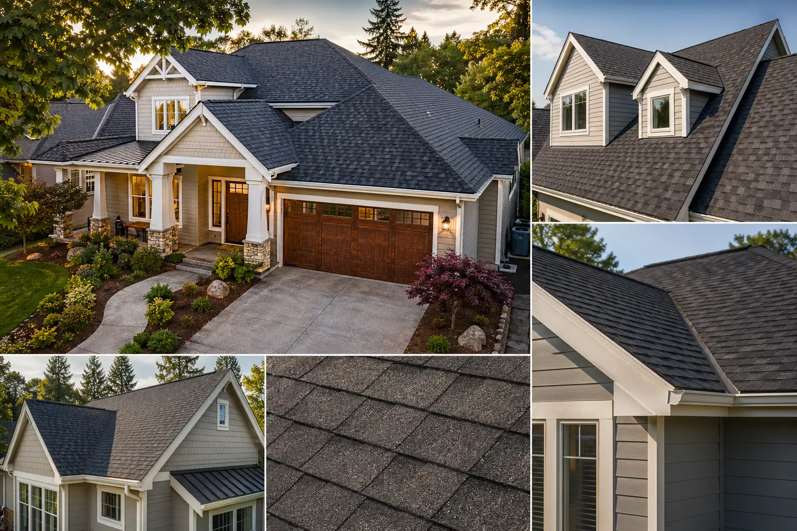

Roofing problem guide
Small roof symptoms can have different causes. Water stains, lifted shingles, exposed fasteners, damaged vents, and flashing gaps may all deserve a closer look before the issue spreads.
Connect with local roofing providers. Providers are independent, and service availability may vary by location.

Understand common roofing service categories, compare possible next steps, and request help from independent local providers.
Roof services include everything professionals do to install, replace, maintain, and improve residential roofing systems. A properly installed and maintained roof protects your home from weather damage, moisture intrusion, and structural deterioration while improving energy efficiency and curb appeal.
From minor repairs to full roof replacements, professional roofing services help ensure a roof remains strong, weather-tight, and built to last. Regular inspections and timely maintenance may help extend the lifespan of a roofing system and prevent costly damage.
RoofBridge Connect is a referral platform. Independent local providers may help with roofing requests, but homeowners should verify licensing, insurance, estimates, warranties, and project terms before hiring any provider.
If you are unsure, submit a general request. A local provider may discuss whether repair, replacement, or installation planning is the right conversation to begin.

Independent local providers may help evaluate leaks, missing shingles, damaged flashing, and localized storm-related concerns.
Explore roof repair
Request help when age, widespread damage, or repeated issues make a replacement discussion worth considering.
Explore roof replacement
Connect with providers who may discuss new construction, additions, detached garages, and remodel roofing scopes.
Explore roof installationSmall roof symptoms can have different causes. Water stains, lifted shingles, exposed fasteners, damaged vents, and flashing gaps may all deserve a closer look before the issue spreads.
Interior stains, attic moisture, and dripping after storms may point to penetrations, flashing, underlayment, or shingle issues.
Missing shingles, debris impacts, and lifted edges should be documented and evaluated before further weather arrives.
Granule loss, curling shingles, repeated repair calls, and roof age may indicate that replacement options should be discussed.
New homes, additions, porches, and garages often need material selection, slope review, ventilation planning, and installation timing.
Consider requesting help after major weather, when interior signs appear, before buying or selling a home, or when a roof is approaching the expected lifespan for its material.
These categories overlap, but the table can help homeowners describe the request clearly when speaking with independent providers.
Compare repair, replacement, and installation options. Service availability may vary by location and project type.